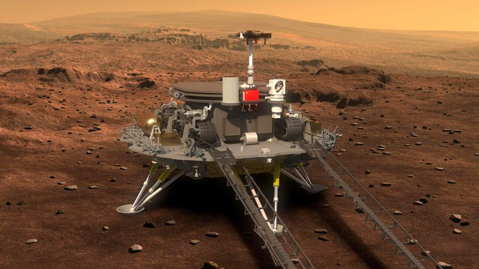

Iniciar sesión
Iniciar sesión
NOTICIAS
"Coronavirus en Reino Unido"
Después de meses de buenas noticias, incluyendo la caída de casos de covid-19 y una campaña de vacunación de gran éxito, el tono en Reino Unido ha cambiado. La relajación total de las restricciones que Inglaterra planea para junio está en peligro, y ronda la sombría posibilidad de que se avecine una mayor presión sobre el Sistema Nacional de Salud (NHS, por sus siglas en inglés). El obstáculo para los planes de reapertura es la variante de coronavirus B.1.617.2, que se detectó por primera vez en India y se ha extendido por todo el mundo. Las preocupaciones han ido en aumento durante la última semana y, por primera vez, los científicos que asesoran al gobierno de Reino Unido ahora creen que esta variante se propagará más fácilmente.
China aterriza nave en la luna
La sonda china Tianwen-1, que transporta el primer robot marciano chino, Zhurong, aterrizó con éxito en el planeta rojo, según anunciaron los medios estatales del país este sábado hora local. El artefacto se posó sin incidentes en Utopia Planitia , una vasta llanura en el hemisferio norte del planeta. El exitoso aterrizaje marca un hito para el programa espacial de China y convierte al país en el segundo del mundo en lograr poner un robot en el planeta rojo con éxito tras EE.UU. China ha conseguido hasta ahora enviar a astronautas al espacio, lanzar sondas a la Luna y posar un robot en Marte, el premio más prestigioso en la competición por el dominio del espacio.